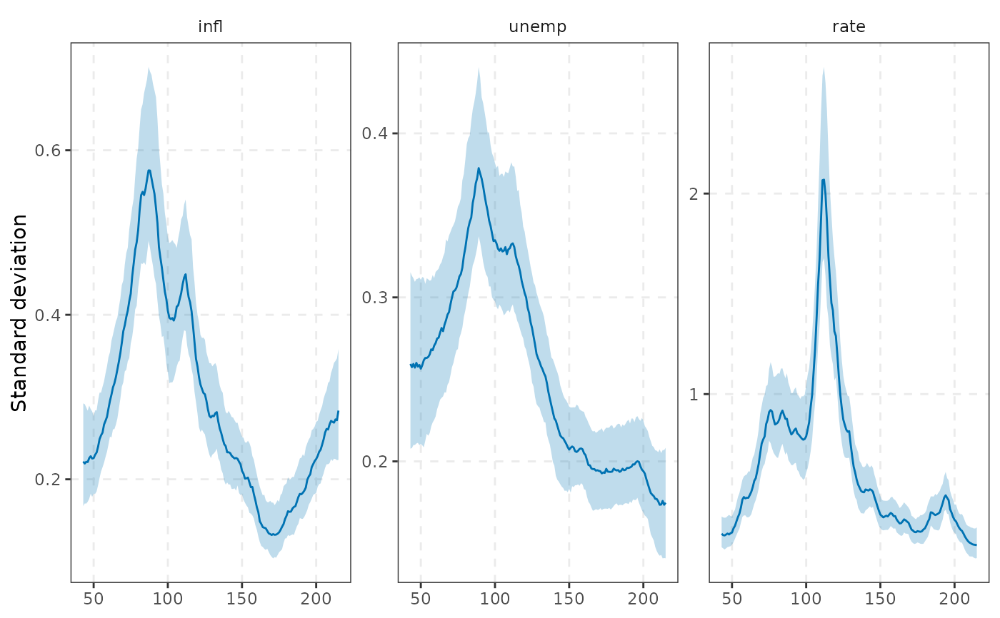
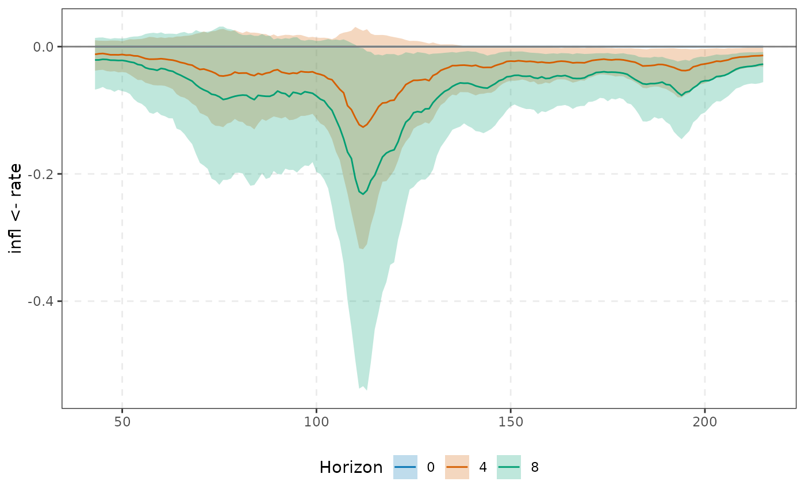
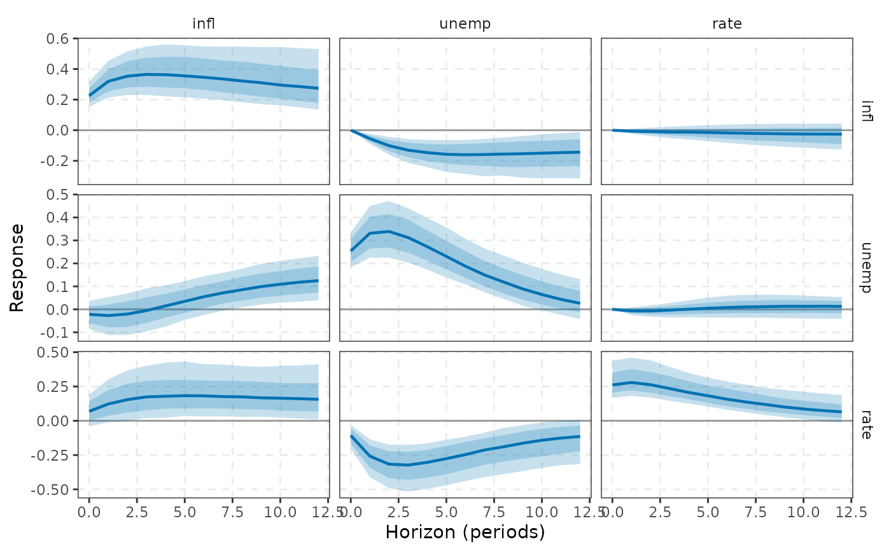

Bayesian TVP-VAR of Cogley & Sargent (2001, 2005) and Primiceri (2005), with the Gibbs-sampler ordering of Del Negro & Primiceri (2015): $$y_t = X_t'B_t + u_t,\quad u_t = A_t^{-1}\Lambda_t^{1/2}\varepsilon_t,\quad \varepsilon_t\sim N(0,I_K),$$ $$\beta_t=\mathrm{vec}(B_t)=\beta_{t-1}+\eta_t,\ \eta_t\sim N(0,Q);\quad \alpha_t=\alpha_{t-1}+\zeta_t,\ \zeta_t\sim N(0,S);\quad \log\lambda_{it}=\log\lambda_{i,t-1}+\nu_{it},\ \nu_{it}\sim N(0,W_i),$$ where \(X_t=(1,y_{t-1}',\dots,y_{t-p}')'\), \(A_t\) is unit lower triangular with free elements \(\alpha_t\), \(\Sigma_t=A_t^{-1}\Lambda_tA_t^{-1\prime}\) and \(S\) is block diagonal with one block per row of \(A_t\). Each Gibbs sweep draws, in order, \(\beta^T|A^T,\Lambda^T,Q\), \(\alpha^T|\beta^T,\Lambda^T,S\), the Kim-Shephard-Chib (Omori et al. 2007, 10-component) mixture indicators and \(\log\lambda^T|\beta^T,\alpha^T,W\), and finally \(Q,S,W\) from their (inverse-) Wishart / gamma conditionals. State paths are drawn with the Durbin-Koopman (2002) simulation smoother (cost linear in \(T\), quadratic in the state dimension), all in C++ with R's RNG.
Arguments
- Y
data frame (preferred),
tsor numeric matrix (T x K) of endogenous variables. Non-numeric columns of a data frame are dropped; aDatecolumn is kept as$datesand used by the plots.- p
lag order.
- ndraw
number of retained draws.
- nburn
burn-in iterations.
- thin
keep every
thin-th sweep.- const
include a constant.
- sv
stochastic volatility (
TRUE) or constant diagonal \(\Lambda\) (FALSE).- tv_beta, tv_A
time-varying coefficients / contemporaneous matrix \(A_t\).
- q_diag
diagonal \(Q\) (independent inverse-gamma priors) instead of a full inverse-Wishart.
- prior
a
tvp_prior().- nsave_paths
number of (evenly spaced) retained draws for which the complete state paths are stored (memory is
nsave_paths x T x K(Kp+1)doubles); impulse responses, volatilities and forecasts are computed from these. Posterior means of the paths use all draws.- reject_explosive
redraw the coefficient path (up to
max_triestimes, otherwise keep the previous path) when any date has a companion root outside the unit circle.- max_tries
see
reject_explosive.- vars
<
tidy-select> endogenous variables (default: all numeric columns). ADatecolumn of a data frame supplies the dates of the paths.
Value
a `tvpvar` object. Methods: [print()], [summary()], [coef()], [irf()] (`date=`), [fevd()], [forecast()], [tidy()][tidy.tvpvar()], [autoplot()][autoplot.tvpvar()], plus [irf_path()] and [tvp_volatility()].
Details
Special cases: tv_A = FALSE gives the Cogley-Sargent (2005) model (time-varying coefficients and volatilities,
constant contemporaneous matrix); sv = FALSE, tv_A = FALSE is the Cogley-Sargent (2001) model with homoskedastic
innovations; tv_beta = FALSE freezes the coefficients (a Bayesian VAR with SV, the benchmark for judging
whether time variation is needed). The recursive ordering of the variables matters whenever tv_A or
sv is on, because \(A_t\) imposes a Cholesky structure on \(\Sigma_t\).
Economic intuition. Time variation in \(B_t\) is a changing transmission mechanism (for example a
monetary policy rule that responds more strongly to inflation after Volcker); time variation in
\(\Lambda_t\) is a change in the size of shocks (the Great Moderation, the 2008 and 2020 episodes); time variation
in \(A_t\) is a change in the contemporaneous propagation of shocks. These are conceptually distinct, and a
model that omits stochastic volatility will tend to push heteroskedasticity into the coefficients. Pitfalls:
(i) the prior on Q (see tvp_prior()) is informative and drives how much coefficient variation is found;
(ii) with many lags the state dimension (\(K(Kp+1)\)) is large relative to the sample, so
keep p small; (iii) the first tau observations are used up as a training sample and are not part
of the estimation sample; (iv) draws of \(B_t\) may be explosive at some dates: use
reject_explosive = TRUE for the (slow) Cogley-Sargent stability truncation.
References
Cogley & Sargent (2005), Primiceri (2005), Del Negro & Primiceri (2015), Durbin & Koopman (2002).
See also
Other TVP-VAR:
irf_path(),
tidy.tvpvar(),
tvp_dynamics,
tvp_prior(),
tvp_volatility()
Examples
# \donttest{
fit <- tvpvar(yraw, p = 2, ndraw = 500, nburn = 500)
fit
#> <tvpvar> TVP-VAR(2), K = 3, estimation sample T = 173 (43 - 215), training tau = 40
#> coefficients: time-varying; A_t: time-varying; volatility: stochastic
#> 500 retained draws, 500 stored paths
autoplot(fit, "vol")

autoplot(fit, "irf", shock = rate, response = infl, horizon = c(0, 4, 8))

plot(irf(fit, date = 50, horizon = 12))

# }